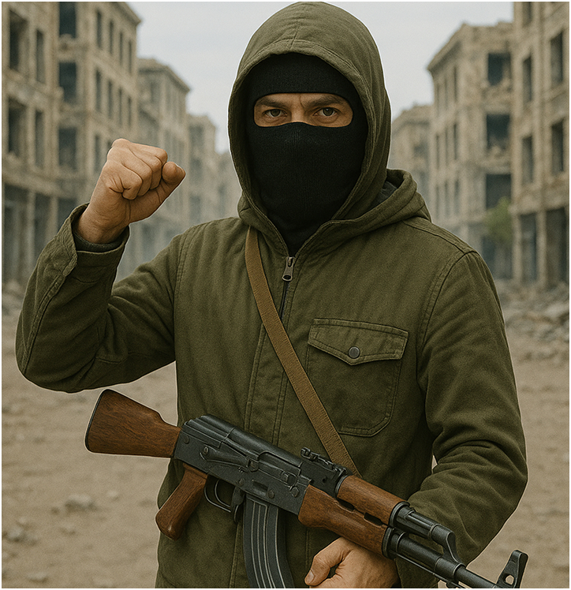

Comment échapper à ces puces ?
C’est la question que se posent tous ceux qui ne sont pas encore pucés. Se cacher ? Ce n’est pas suffisant. Il faut être plus malin, plus stratégique, pour déjouer les recherches de l’État. Les résistants en sont bien conscients : ils renoncent à une avancée technologique majeure, à des soins médicaux facilités et à un confort accru… mais c’est un prix qu’ils acceptent de payer.
La plupart des résistants se fondent dans la foule, là où la densité humaine brouille les signaux et rend les radars moins efficaces.

Mais cette méthode reste risquée. Une alternative plus sûre : s’installer dans les sous-sols, les égouts ou les galeries abandonnées. Le confort y est sacrifié, mais la sécurité, elle, y est bien plus grande.

Les camps
Il existe aussi des sortes de camps secrets, dissimulés en surface. Des tribus entières de non-pucés s’y sont regroupées. Entourés de brouilleurs de signaux, protégés par des tours de garde et des patrouilles constantes, ils ont fortifié leurs campements pour échapper à toute détection. Grâce à une technologie bricolée, faite de gadgets et d’astuces, ils sont devenus invisibles aux yeux de l’État. Leur existence est niée officiellement, mais tout le monde a entendu parler d’eux.

Les Kages c’est quoi ?
Dans l’imaginaire collectif, façonné par la propagande, ces résistants sont vus comme des monstres. C’est ce que l’État veut faire croire. On les appelle les Kage — un nom qui inspire la peur et le rejet chez les citoyens pucés. Mais pour les résistants, ce nom est porteur d’espoir. Il symbolise une lumière fragile dans l’ombre, une beauté clandestine.
Leurs équipements
Les Kage disposent de technologies uniques : des parapluies spéciaux qui brouillent les radars, des vêtements capables de perturber les caméras et de rendre leur porteur invisible.
Ces équipements, fruits d’un génie clandestin, leur permettent de vivre dans une paix précaire, mais réelle. Une paix qu’ils ont choisie. Une liberté qu’ils défendent, coûte que coûte